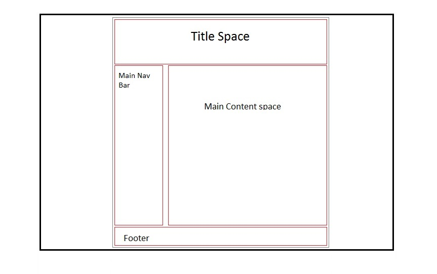
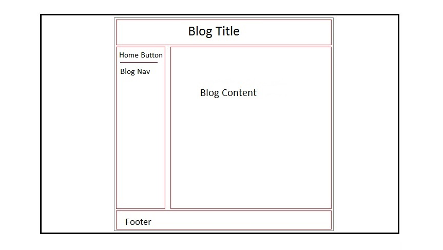
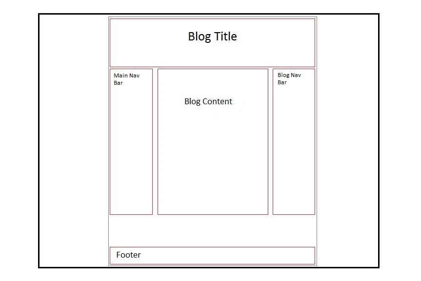

A responsive site is one that while alter the orientation of it's content to fit the resolution of the screen of which it is being viewed. Such as phones, tablets and PCs. Otherwise a site built purely for pc may have an unfriendly experience for mobile users.
What mobile first design is, and why it's important?It is the process of designing the layout of your site for the needs of a mobile user 1st. It is much easier to have a small amount of content and then move into a larger resolution, rather than a large amount of content and then move into a smaller resolution.
What frameworks are, and their pros and cons?Frameworks are pre-made code templates which can help devs create a functioning page in a fraction of the time. The draw back is that there may be a lot of unwanted code within the framework that needs to be deleted.
What a wireframe is and why we use it?It is the brainstorming of your site design. Where you intend your boxes to be placed and how they will be moved around for different resolutions. By doing this you can save considerable time from moving around your code to get the layout you want.
Examples:    What aspects of your wireframes you found difficult to implement, and why?
My main difficulties was getting boxes to sit how I wanted them to. I kept getting some that would be in the row how I intended but then some parts would go underneath inthe column. Finally realised I needed to set my margins at 0px as they were making my content too large to fit in the row.